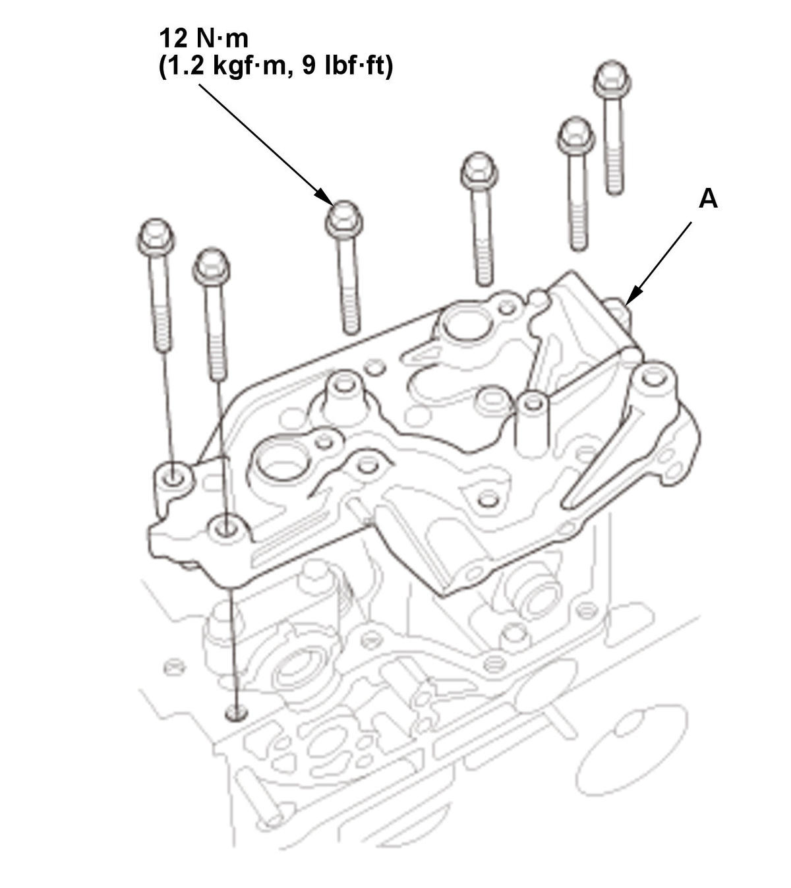
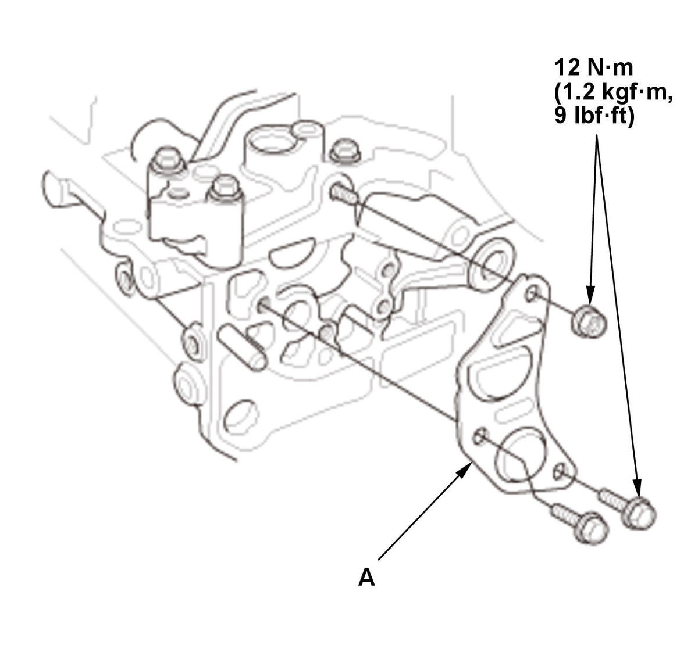
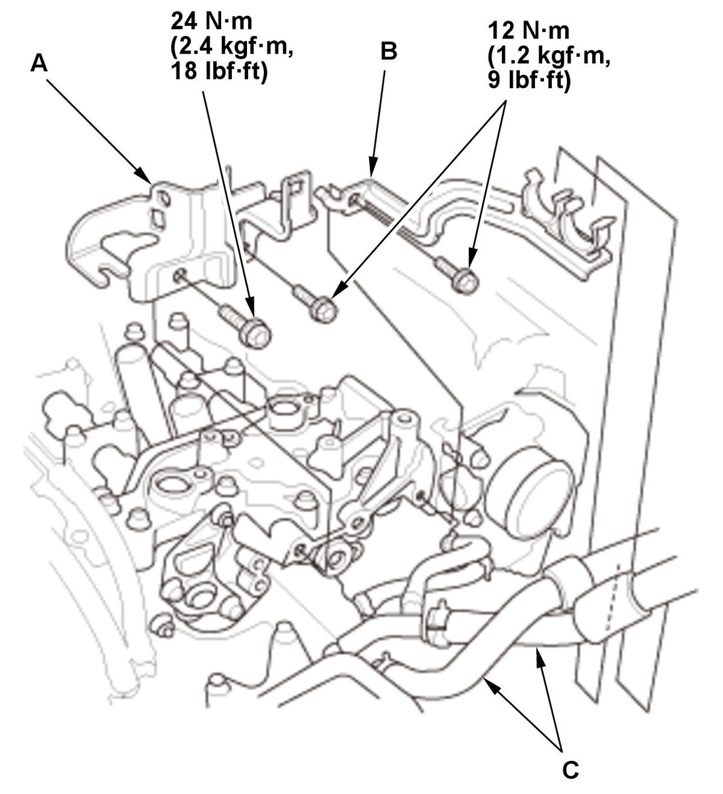
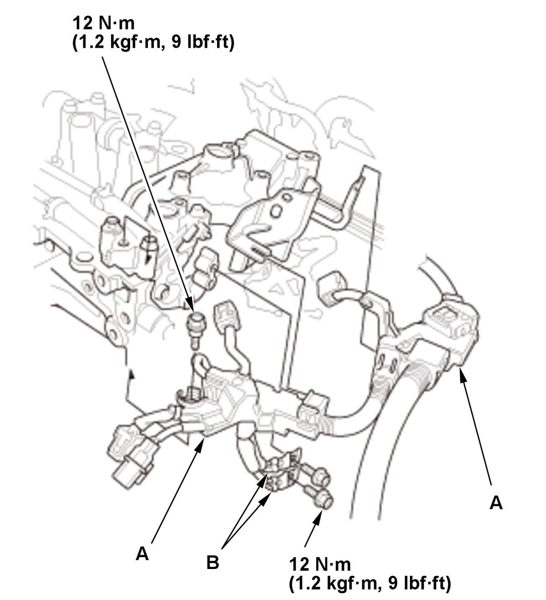
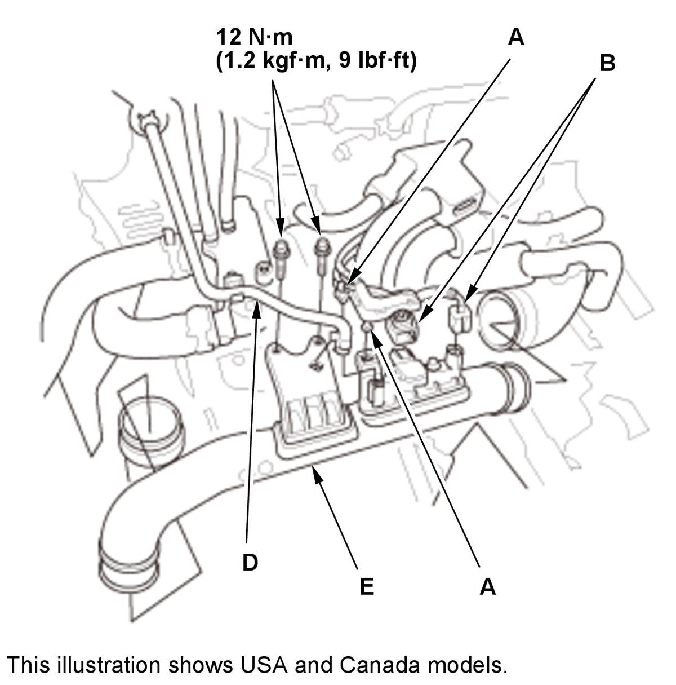

Cylinder Head Removal and Installation (L15B7): Installation
- Cylinder Head - Install
1. Clean the cylinder head and engine block surfaces. 2. Install a new coolant separator (A) in the engine block whenever the engine block is replaced.
3. Install the new cylinder head gasket (B) and the dowel pins (C) on the engine block. Always use a new cylinder head gasket.
4. Install the cylinder head on the engine block.
When the new cylinder head bolt is installed 5. Apply new engine oil to the threads and under the bolt heads of all cylinder head bolts.
6. Torque the cylinder head bolts in sequence to 30 N.m (3.1 kgf.m, 22 lbf.ft) with a beam-type torque wrench if possible. When using a preset click-type torque wrench, be sure to tighten slowly and do not overtighten. If a bolt makes any noise while you are torquing it, loosen the bolt and go back to step 5.
7. After torquing, tighten all cylinder head bolts an additional 165°, in the numbered sequence shown.
NOTE:
- Tighten the cylinder head bolts to the specified angle, using a commercially available angle gauge.
- Remove the cylinder head bolt if you tightened it beyond the specified angle and go back to step 5 of the procedure. Do not loosen it back to the specified angle.
When the cylinder head bolt is reused 8. Apply new engine oil to the threads and under the bolt heads of all cylinder head bolts.
9. Torque the cylinder head bolts in sequence to 30 N.m (3.1 kgf.m, 22 lbf.ft) with a beam-type torque wrench if possible. When using a preset click-type torque wrench, be sure to tighten slowly and do not overtighten. If a bolt makes any noise while you are torquing it, loosen the bolt and go back to step 8.
10. After torquing, tighten all cylinder head bolts an additional 140°, in the numbered sequence shown.
NOTE:
- Tighten the cylinder head bolts to the specified angle, using a commercially available angle gauge.
- Remove the cylinder head bolt if you tightened it beyond the specified angle and go back to step 8 of the procedure. Do not loosen it back to the specified angle.
- Rocker Arm Assembly - Install
- Camshaft - Install
- Cam Chain - Install
- Valve Clearance - Adjust
- Thermostat Housing - Install
- High Pressure Fuel Pump Base - Install

Courtesy of HONDA, U.S.A., INC.1. Apply liquid gasket to the cylinder head mating surface of the high pressure fuel pump base and to the inside edge of the threaded bolt holes. 2. Install the high pressure fuel pump base (A).

Courtesy of HONDA, U.S.A., INC.3. Apply liquid gasket to the cylinder head and the high pressure fuel pump base mating surface of the cam holder cover and to the inside edge of the threaded bolt holes. 4. Install the cam holder cover (A).

Courtesy of HONDA, U.S.A., INC.5. Install the harness holder bracket (A) and the heater hose bracket (B). 6. Connect the heater hoses (C).

Courtesy of HONDA, U.S.A., INC.7. Install the harness holders (A). 8. Install the ground cables (B).
- CMP Sensor A/B - Install
- EVAP Canister Purge Valve - Install
- Cylinder Head Cover - Install
- Harness Holder Mounting Bolt - Install
- Injector - Install
- High Pressure Fuel Pump - Install
- Intake Manifold - Install
- VTC Oil Control Solenoid Valve B - Install
- Turbocharger - Install
- TWC Assembly - Install
- Intake Air Duct E - Install

Courtesy of HONDA, U.S.A., INC.1. Install intake air duct E.
NOTE: Make sure the end of hose band is aligned with the mark on the hose band after intake air duct E is installed.2. USA and Canada models: Connect purge tube D.
3. Install the harness clamps (A).
4. Connect the connectors (B).
- Intake Air Duct - Install
- Air Cleaner - Install
- 12 Volt Battery - Install
- Intake Air Resonator - Install
- After Installation - Check
1. After installation, check that all tubes, hoses, and connectors are installed correctly. - Engine Coolant - Refill
- Fuel Leak (Low Pressure Side) - Check
1. Turn the vehicle to the ON mode, but do not start the engine. After the fuel pump runs for about 2 seconds, the fuel line will be pressurized. Repeat this two or three time, then check for fuel leakage. - Fuel Leak (High Pressure Side) - Check
- Idle Speed - Inspect
- Ignition Timing - Inspect